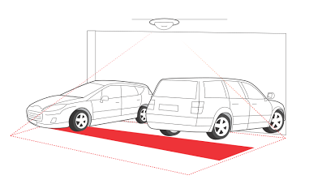

People Counter runs
fully embedded in standard ceiling mounted network cameras and
automatically counts in real time the number of people passing
under the camera and in what direction.
People Counter provides the critical data you need to leverage
your business. Use precise knowledge about visitor traffic to:
The Parking Counter is a product for counting and managing occupancy in parking garages. The software installs directly into standard IP cameras, which are placed in the ceiling over entrances and exits for counting vehicles to and from the facility.
